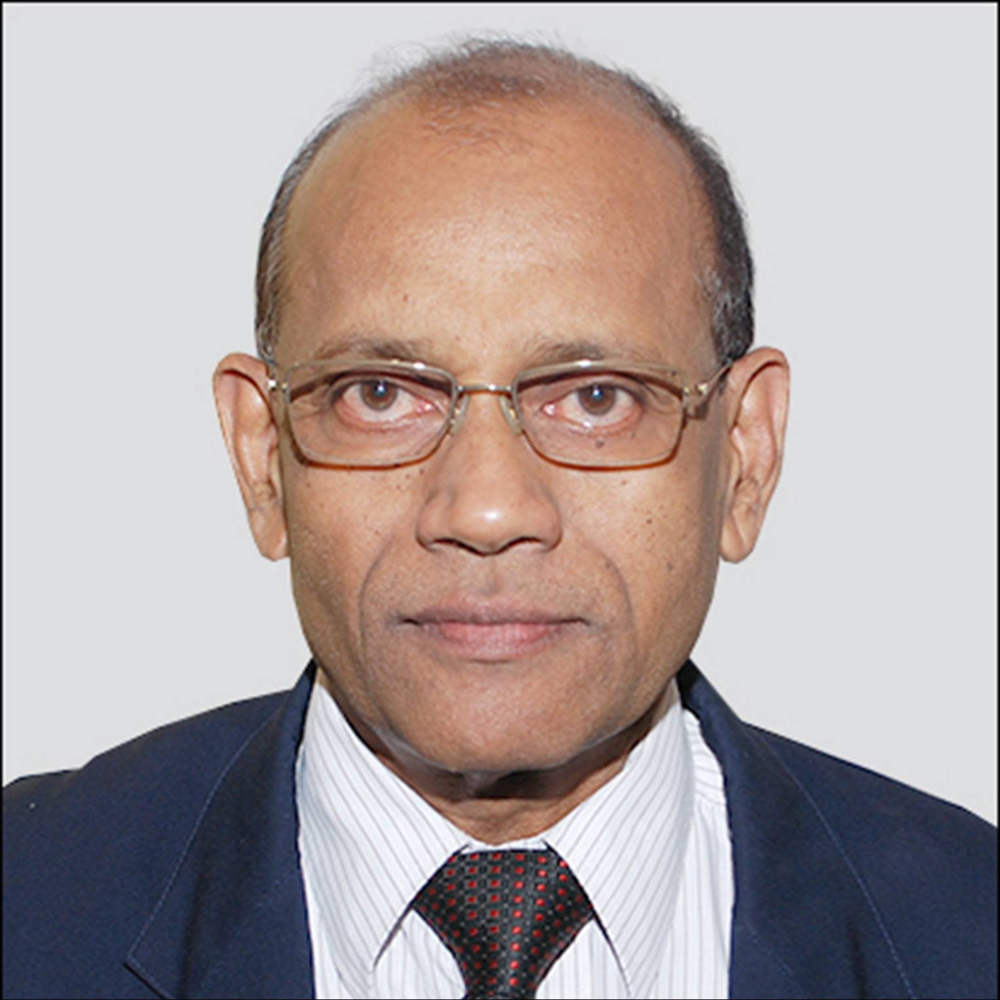
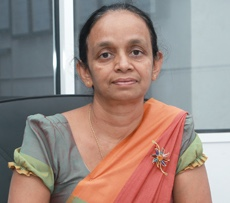
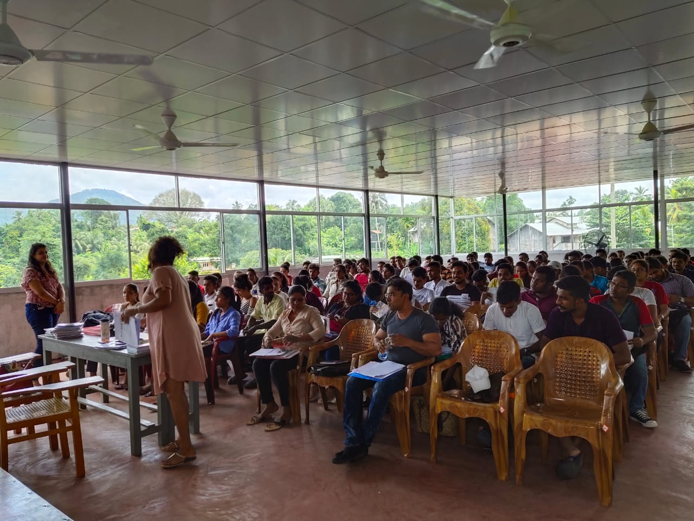
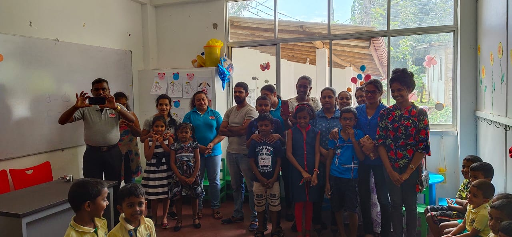
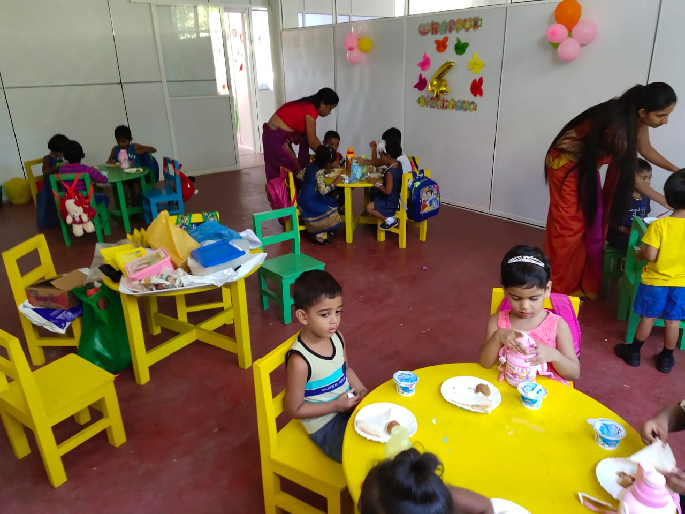
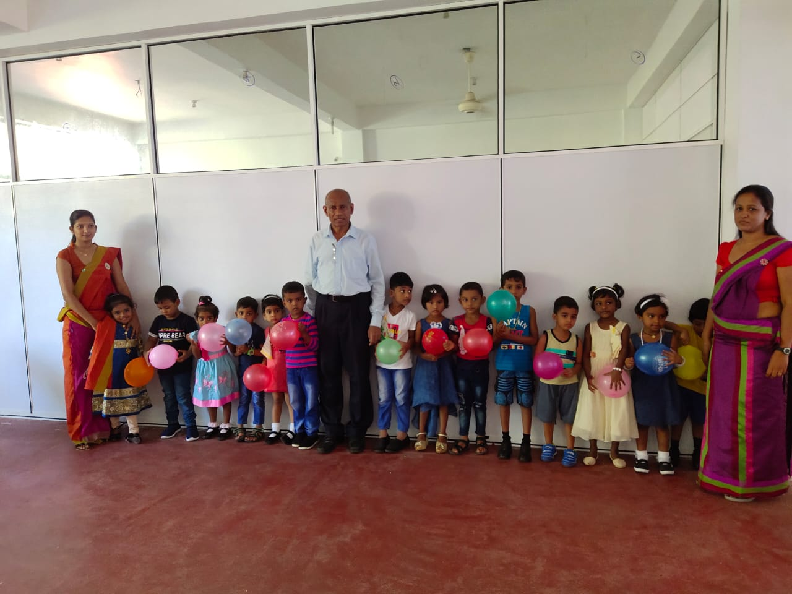
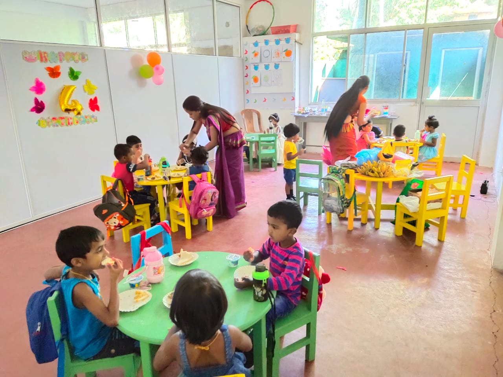

01
Day school
Kindergarten & Primary
English-medium education shaped around Sri Lanka’s national curriculum, with a focus on foundational knowledge, communication and the whole child.
Kindergarten and primary programmeKindergarten & primary · Korathota
Princeway College follows Sri Lanka’s national curriculum in a caring community where every child is known, encouraged and prepared to grow with confidence.
Welcome to Princeway
Princeway College is a private English-medium school built around the national curriculum and a simple belief: children thrive when high expectations are matched with genuine care.
Our teachers encourage academic, social and emotional growth through personal attention, strong values and an environment where learning is purposeful and joyful.
What guides usLearning at Princeway
Age-appropriate learning, attentive teaching and opportunities that help children become capable and curious learners.
Day school
English-medium education shaped around Sri Lanka’s national curriculum, with a focus on foundational knowledge, communication and the whole child.
Kindergarten and primary programmeBeyond the school day
Additional learning support for local-syllabus students in English and Sinhala medium, offered outside regular school hours.
Explore extra classesBroader pathways
Private tuition support for learners following the Cambridge curriculum. Contact the school for current subjects and class times.
Explore Cambridge supportThe Princeway promise
Our crest brings together the book of knowledge, the lamp of enlightenment and the crown of dignity. Its green and white reflect growth, value and purity—an identity grounded in learning, belonging and hope.
Intellectual, social, emotional, moral and physical development belong together.
Children learn to act with compassion, courage and care for their wider community.
Every learner is encouraged to discover their potential through attention and inspiration.
Students, parents and teachers work as one community with a shared sense of purpose.
People with purpose
Experienced educators and advisers united by a commitment to excellent, student-centred education.

Founder & Managing Director

Principal
Honorary Adviser
Life at Princeway
A glimpse into learning, play and celebration from our school community archive.




Parent resources
Thoughtful guides for families choosing a school, supporting early learning and helping children grow in confidence.

Choosing a school
A calm, practical framework for comparing learning, care, communication and the daily realities of school life.
Read the guideEarly learning
What readiness really looks like—and the small routines that help a child begin school with confidence.
Read the checklistCommunication
Supportive ways to build fluency through conversation, reading, play and patient encouragement.
Explore the ideasAdmissions & enquiries
Tell us your child’s age and the programme you are interested in. Our school team will help with current availability, class times and the next steps.
Visit or contact us
Please contact the school before your first visit for the most direct route and current office hours.